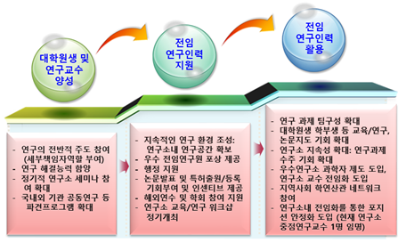
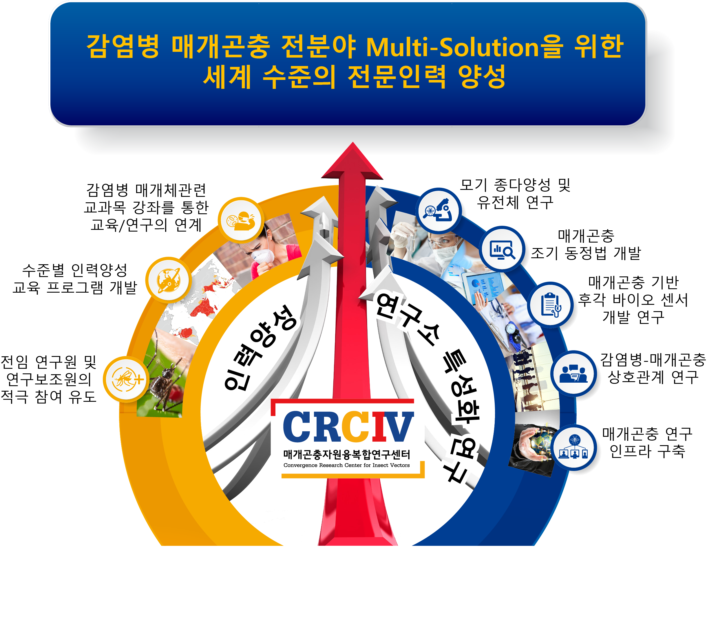

교육
교육 사업 계획


연구인력 양성교육과 연구의 연계
인천대학교은 바이오중심의 연구대학으로 탈바꿈하기 위해 2016년부터 인천대학교 특성화 사업으로 메트릭스 연계사업과 교내 봉우리연구사업 등을 진행하였음
이에 발맞추어 인천대학교 매개곤충자원연구센터는 2016년에 연구소설립준비를 통하여, 2017년 1월에 학내 연구소로 설립되었고, 현재까지 감염병 매개곤충연구의 다학제적 교육/연구프로그램을 운영함
인천 지역적 여건에 적합한 매개곤충 융합바이오산업을 국내외 혁신주체 간 협업네트워크 구축 및 국제공동연구를 수행함
매개곤충을 모델로 기반연구에서부터 다학제 BINT(Bio-Information-Nano Technology) 융복합연구와 산업을 발전시키고, 나아가 국가적으로 질병매개체에 대한 과학적인 연구와 인프라구축으로 동북아의 Hub로 육성함
현재 매개곤충자원융복합연구센터는 2020년 1월 현재 매개곤충의 하나인 꿀벌과련 국가연구과제 2개의 주관기관으로 선정이 됨 (2020~2023년): 따라서 연구를 기반으로 교육과 연계한 프로그램을 구축 가능
매개곤충자원융복합연구소 연구진은
세계 최초 매개곤충의 전장 유전체 분석 완료,
해외 종다양성 현지 연구 20년간 구축,
딥러닝을 이용한 자동모기동정 논문게재(네이처자매지, 2020),
매개곤충기반 바이오센서 논문 게재,
모기의 흡혈메커니즘 세계최초 규명 등 세계수준의 매개곤충 연구의 메카로 자리잡음
생물안전등급2등급의 모기사육시설 구축 완료
본 중점연구소 사업에서 진행되는 매개곤충의 종다양성연구, 유전체기반 매개곤충 감염병 상호관계 연구, 딥러닝/빅데이터를 이용한 자동 동정시스템개발, 모기 등의 매개곤충 후각기반의 바이오센서를 이용한 유인제 개발 및 현장 자동모니터링 시스템 연구를 중심으로 특성화 교육을 위한 다학제 학점인정 트랙 및 연계프로그램을 만들 예정임
이를 통하여 본 연구소 참여인력은 아래 표의 기준에 따른 교육과정 및 졸업이수 기준을 충족할 수 있도록 하여 연구 역량 및 기초 교육과정을 이수한 전문 인력으로 육성함
연구인력 양성 및 활용계획가. 전임연구인력의 양성 및 장기적인 활용 계획
- 장기적으로 연구의 전임연구인력을 아래와 같이 양성하며, 교육/연구 수준과 안정화된 연구기반 조성을 통하여, 지속적 연구인력이 배출되도록 함
연구보조인력의 전문인력으로 양성을 위한 계획
◦ 매개곤충자원융복합연구센터가 대학중점연구소가 된다면, 연구보조인력은 장기적으로 진학 또는 기업취업을 목표로 하기에 이들의 전문인력으로의 양성하기 위해 연구분야의 실험실습 강화와 더불어 자체적인 연구 모임을 구성하여 창의적인 인력으로 성장하도록 지원함
◦ 감염병 매개체 교육/연구 분야의 국내 및 국외 선진화 연구소로 자리매김하고 본 연구과제에 참여하는 연구원의 연구결과를 해외 우수 연구기관과의 상호 발표교류회를 통해 해외 취업 및 장기적인 연구인력으로 육성함
◦ 또한 중점연구소 자립화 방안에 따라 안정적인 운영시 참여연구인력의 장기적인 활용이 가능하도록 함
2-3단계 인력양성 계획
상기 1단계 인력양성 계획의 구체화 및 교내 편제된 학과와 연계를 하여, 코드쉐어프로그램(전공인정학점 공유)를 통한 다양한 연구인력 양성 추진
연구소 특성화 ‧ 전문화 발전계획을 통하여 국제학회를 섭외(Keystone meeting 등: 본연구소 운영진이 KEYSTONE 하고히 study group 참여함)함
학내 부설연구소화를 통하여 장기적 안정된 연구소 운영을 통한 다양한 프로그램 신설
외국 관련 연구소와 교환프로그램 확대
국내외 공공기관, 연구기관과 전문인력 양성 공동 교육/연구 프로그램 개발 및 운영 계획
인천대학교 내 방역연계계약학과 신설, 관련 수업 개설을 통해 감염병 매개체 관리 및 학술연구의 수준 향상과 방역관련 전문인력 양성 (선정시 대학 지원 확약 사항)
송도국제도시에 위치한 국제협력기관 GCF, KOICA 등과 연계한 매개곤충자원 제반 연구 및 국제적 지원 관련 전문인력 양성 및 세계적 수준의 전문컨설턴트 육성 교육 프로그램을 운영 예정
아시아 개도국 지원 전문인력 양성 계획 (2~3단계 교육 특성화 프로그램): 말레이시아 말라야대학 열대감염병연구교육센터와 상호 인력양성프로그램 구축
산업체 연계 인력양성프로그램 신설: 보건방역계약학과 신설 추진 중(2018년부터 신설 추진 중, 증빙):
대상: 인천대 규정상 계약학과는 일반 회사와 계약을 하는 학과로서, 현재 방역협회 산하 국내 중소기업과 연계하여, 감염병 및 매개곤충 관련 방역분야의 전문 인력양성을 진행 중
교과목: 매개곤충과 보건방역, 질병매개체 행동생태학, 보건방역세미나, 보건방역과학과 산업, 외래동식물검역학, 위생곤충학 특론, 생물안전성 특론, 매개체 생물학 등 개설 예정